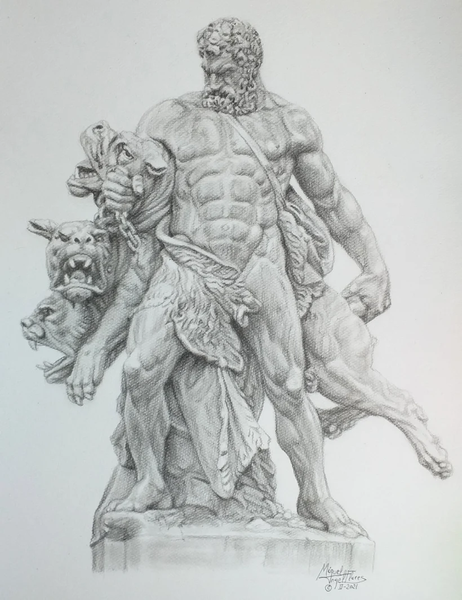
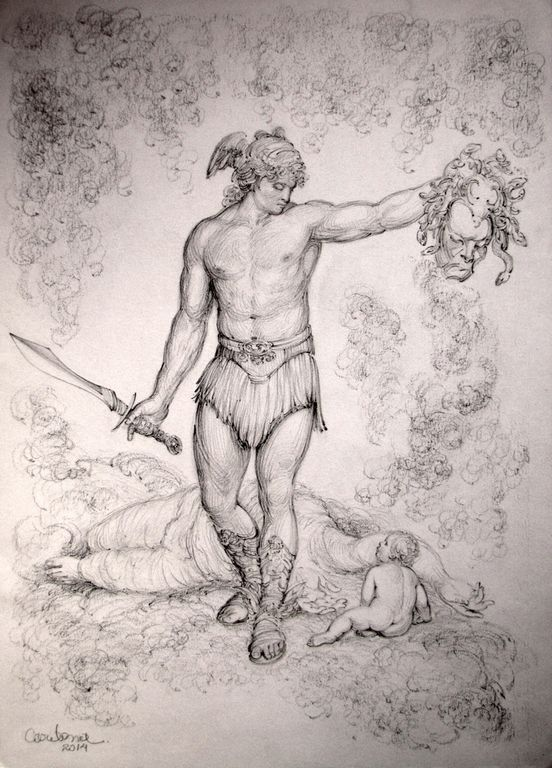
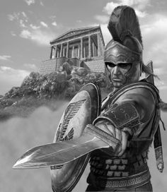

DEMI GODS
A demigod or demigoddess is a part-human and part-divine offspring of a deity and a human,or a human or non-human creature that is accorded divine status after death, or someone who has attained the "divine spark" (spiritual enlightenment). An immortal demigod(-dess) often has tutelary status and a religious cult following, while a mortal demigod(-dess) is one who has fallen or died, but is popular as a legendary hero in various polytheistic religions. Figuratively, it is used to describe a person whose talents or abilities are so superlative that they appear to approach being divine.
HERACLES
Heracles (in ancient Greek Ἡρακλῆς [Hēraklḗs], from the name of the goddess Hēra, and kleos, 'glory',
that is, 'glory of Hera') or Hercules (in Roman mythology) was a hero of Greek mythology. He was the son
of Zeus and Alcmene, a mortal queen, adoptive son of Amphitryon, and great-grandson of Perseus on the
maternal line.
He received the name Alceo or Alcides at birth, in honor of his grandfather Alceo (Ἀλκαῖος, Alkaios);6
although this same word evokes the idea of strength (Greek ἀλκή). It was in his adulthood that he
received the name by which he is known, imposed by Apollo, through the Pythia, to indicate his status as
a servant of the goddess Hera. In Rome, as well as in Western Europe, he is better known as Hercules and
some Roman emperors, including Commodus and Maximian, identified with his figure.
PERSEUS
In Greek mythology, Perseus (/ˈpɜːrsiəs, -sjuːs/; Greek: Περσεύς, translit. Perseús) is the legendary founder of Mycenae and of the Perseid dynasty. He was, alongside Cadmus and Bellerophon, the greatest Greek hero and slayer of monsters before the days of Heracles. He beheaded the Gorgon Medusa for Polydectes and saved Andromeda from the sea monster Cetus. He was the son of Zeus and the mortal Danaë, as well as the half-brother and great-grandfather of Heracles (as they were both children of Zeus, and Heracles' mother was descended from Perseus).
AQUILES
Heracles (in ancient Greek Ἡρακλῆς [Hēraklḗs], from the name of the goddess Hēra, and kleos, 'glory', that is, 'glory of Hera') or Hercules (in Roman mythology) was a hero of Greek mythology. He was the son of Zeus and Alcmene, a mortal queen, adoptive son of Amphitryon, and great-grandson of Perseus on the maternal line. In Greek mythology, Achilles or Achilles (in ancient Greek Ἀχιλλεύς or also Ἀχιλἣος and in modern Greek Αχιλλέας) was a hero of the Trojan War and one of the main protagonists and greatest warriors of Homer's Iliad. He was a grandson of Aeacus and son of Peleus and Thetis, which is why he is often called "Pelida" and "Eacida". In the famous Homeric work, Achilles is usually described as "the one of the light feet", since he was considered the fastest of men. Later legends (beginning with a 1st-century poem by Statius) state that Achilles was invulnerable in all but his heel. These legends hold that Achilles was killed in battle by being struck in the heel by a poisoned arrow. It is from here where the expression "Achilles heel" takes shape to refer to the greatest weakness of a person; and in the field of anatomy, a tendon in the back of the leg is called the "Achilles Tendon".